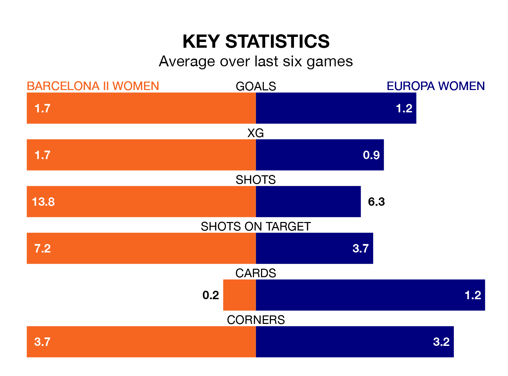

Mid-season relegation candidates Europa Women face a challenge away against high-flying Barcelona II Women on Sunday.
Europa Women are 12th in the Primera Federación Femenina table, and have picked up four wins and one draw in their 14 games to date.
Barcelona II, meanwhile, are third in the standings with 28 points, having won nine and drawn one, and are five points behind table-toppers Deportivo de La Coruña W.
With 25 goals in 14 games so far this season, Barcelona II are the league's second-highest scorers with 1.8 goals per game. And they are conceding fewer than average, letting in 13 goals at a rate of 0.9 per game.
Europa, meanwhile, are below average scorers, with 0.9 goals per game, compared to a league average of 1.3. They have conceded 2.3 goals per game.
The hosts are in good form in Primera Federación Femenina, with four wins and a draw from their last six games.
With two wins and four losses over that period, the away side's form is much worse – they have taken six points from 18, compared to Barcelona II's 13.
Barcelona II's last match was on January 14, a 2-0 win against Osasuna Women, with getting the goals for Barcelona II.
Europa lost 2-0 against AEM Lleida Women last time out, also on January 14.
Updated: 10:02 (UTC), 19/01/24